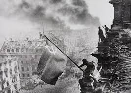
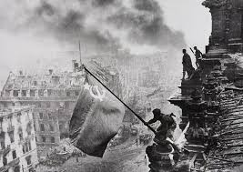

MENGKAMBINGHITAMKAN ADALAH HAKIKAT FASISME
 

Disinilah kita semua melihat, fasisme tidak hanya bergantung pada nasionalisme ekstrem, tetapi mereka juga butuh faktor eksternal yang bisa disalahkan. Tak peduli mau itu Yahudi, mau itu komunis, mau itu imigran atau apapun yang disebut-sebut merusak
kemurnian sebuah bangsa, mereka selalu membutuhkan sesuatu
untuk disalahkan, dan pada akhirnya identitas
mereka bukanlah berdasarkan siapa mereka, tetapi siapa yang mereka benci.
Dari rezim totaliter Nazi, tak banyak yang mengingat apa itu bangsa Arya, orang-orang hanya mengingat
siapa yang mereka (rezim totaliter Nazi) benci, yaitu orang-orang yang dianggap “tidak murni”.
Tidak banyak yang mengingat seperti apa ras Arya, tetapi banyak yang mengingat apa yang mereka lakukan kepada kaum-kaum yang dimusuhi-nya,
tidak banyak yang mengingat jasa-jasa Nazi Jerman tapi banyak yang mengingat kerusakan yang mereka buat.
Sebagai tambahan, fasisme bukanlah ideologi yang bisa benar-benar bersatu karena sekali lagi; mereka membutuhkan sebuah kambing hitam.
Contohnya jelas, di perang dunia kedua blok poros adalah sebuah persekutuan atas dasar kepentingan, yaitu sama-sama anti komunis.
Pakta Anti-Komintern sudah tidak bermakna ketika Joseph Stalin membubarkan Komintern di tahun 1943 dan disaat itulah blok poros kehilangan jati-dirinya.
Musuh terbesarnya bubar dengan sendirinya lewat tangan besi Stalin. Perlahan tapi pasti, kehilangan jati diri ini membuat
blok poros retak hingga paku terakhir ditancapkan di tanggal 9 Mei 1945.
Dan pada bagian ini kita akan membahas lingkaran kematian Fasisme.
Katakanlah blok poros menang, katakanlah bangsa yahudi dan orang komunis lenyap, katakanlah bangsa Slavia berhasil ditaklukan, apakah akhirnya Jerman, Jepang dan Italia hidup damai sebagai “bangsa murni”?
Tidak.
Fasisme tak pernah lahir untuk damai, fasisme lahir untuk membuat musuh imajiner dan memeranginya, mereka adalah ideologi yang destruktif, mereka haus akan perpecahan, mereka terus masturbasi dengan masa lalu yang hilang, mereka akan terus mencari musuh dalam bentuk apapun.
Tak ada yang benar-benar murni dalam fasisme, tak peduli jika kamu berambut pirang, bermata biru
dengan ukuran tengkorak tertentu, kamu tetap dicap tidak murni, kamu tetap dalam resiko menjadi
kambing hitam selanjutnya, perdamaian jauh dari mungkin dalam rezim fasis.
Fasisme akan mati dengan sendirinya, bukan karena dikalahkan faktor eksternal, tetapi karena
kehabisan kambing hitam dan akhirnya kehabisan alasan untuk bertahan hidup.
Nasionalisme ekstrem dalam fasisme bukan tentang siapa mereka sebenarnya,
tetapi siapa yang mereka benci, seakan-akan membenci ras atau faham tertentu adalah sebuah
ideologi politik bahkan bisa disebut personality.
Halaman selanjutnya: